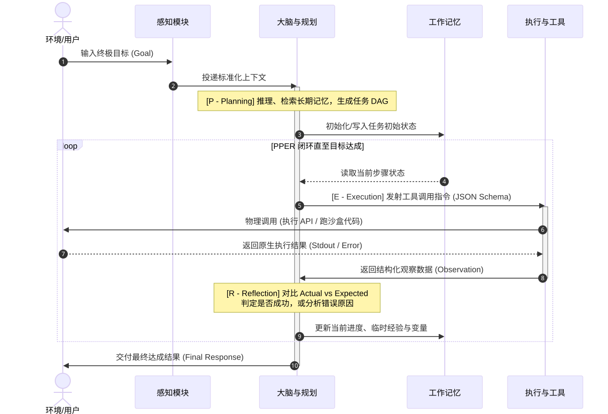

感知层的输入经过整合，形成 Agent 的"当前上下文"，送入大脑进行理解和决策。
把原始输入变成模型此刻能够使用的任务上下文。Agent 在行动之前，必须先"看到"和"听到"外部信息。现代 Agent 已经不限于纯文本输入，而是具备多模态感知能力：
- 输入信息：接收文本、图像、语音、结构化数据、日志与环境事件等等
- 工具返回结果：把上一轮工具结果重新送入下一轮决策。
理解 Agent，不能只盯着大模型。一个可用的 Agent 是由模型、上下文、工具、状态、运行时和治理机制共同组成的目标执行系统。本章先回答“它是什么”，再拆开“它由什么构成”，随后划清“它能做、可做和应做的范围”，最后沿一次任务的完整生命周期观察这些部分如何协作。
AI Agent 是一个位于特定环境中、以目标为驱动，能够持续感知状态、规划步骤、调用工具采取行动，并依据反馈调整策略，直至完成、暂停或终止任务的智能系统。
这个定义中，每个词都在限定 Agent：它不是脱离环境的“万能大脑”，而是在特定环境里工作；它接收的是目标而不只是一个问句；它可以在多步过程中自主选择下一步；它的行动会改变外部状态；它还必须读取行动结果，再判断是继续、纠错、求助还是停止。可将这种基本能力概括为“感知—决策—行动”，并用持续反馈循环区分 Agent 与一次性模型调用。

大语言模型擅长理解语言、归纳信息、生成计划和选择工具，但原生模型通常没有持续状态，也不会自己获得真实世界的最新信息，更不能直接发送邮件、改数据库或运行命令。Agent 将模型嵌入一个运行系统：运行时负责提供上下文、暴露工具、执行动作、保存状态、校验结果和控制权限。可以把模型理解为“发动机”，Agent 则是带有传动、仪表、刹车和道路规则的整车。
Agent = LLM (大脑) + Planning (规划) + Tool use (执行) + Memory (记忆)。
模型提供推理能力；其余部分决定这份能力能否稳定、安全地落到真实任务中。
| 形态 | 驱动方式 | 路径 | 外部行动 | 适合任务 |
|---|---|---|---|---|
| 单次 LLM 调用 | 输入驱动 | 一次生成，输出即结束 | 通常没有 | 改写、摘要、分类、单轮问答 |
| 聊天机器人 | 对话驱动 | 由用户逐轮推进 | 可选，通常较少 | 咨询、知识问答、交互式辅助 |
| 自动化工作流 | 规则／事件驱动 | 开发者预先定义 | 按固定节点执行 | 步骤稳定、异常分支可枚举的流程 |
| AI Agent | 目标驱动 | 运行时动态选择并可调整 | 通过受控工具执行 | 信息不完整、需要判断与多步适应的任务 |
如果任务步骤确定、分支有限、结果必须完全可预测，普通程序或工作流往往更便宜、更快、更可靠。只有当“下一步动作需要依据新信息临场判断”时，Agent 的动态规划和反馈循环才真正产生价值。
Agent 的最小闭环：一个系统即使只调用一次工具，也不一定是 Agent。更实用的判据是：它能否形成目标 → 感知 → 决策 → 行动 → 观察 → 再决策的闭环，并在无人逐步指挥的情况下推进至少一段任务。自主性并不等于“全自动”；能够在关键节点主动请求澄清、权限或人工审批，本身也是合格决策的一部分。
教学上常把 Agent 拆成感知、大脑、规划、工具和记忆五部分。工程落地时，还要补上运行时与治理层：前者让循环真正跑起来，后者保证循环不会越界。五个核心能力加两个支撑能力，构成一个较完整的系统视图。

把原始输入变成模型此刻能够使用的任务上下文。Agent 在行动之前，必须先"看到"和"听到"外部信息。现代 Agent 已经不限于纯文本输入，而是具备多模态感知能力：
这是 Agent 最核心的部分（比如 GPT-4、Claude、DeepSeek、通义千问）。理解目标，综合当前状态，决定回答、调用工具、追问或停止。
连接模型与外部世界，对于 AI Agent 来说，工具就是能把决策转化为真实动作的执行单元。
现代大模型通过"函数调用"(Function Calling)机制来使用工具。开发者预先定义工具的名称与参数说明，模型在推理时会以结构化 JSON 的形式输出"我要调用哪个工具、传什么参数"，由外部程序负责真正执行并把结果返回给模型。
把高层目标转换为可执行步骤，并在环境变化后修订计划。Agent将复杂大任务拆解成多个子步骤依次执行。
保存“已知什么、做过什么、现在到哪一步”，让多轮执行保持一致，类似记录本。
| 组件 | 典型失效 | 可见后果 | 工程防线 |
|---|---|---|---|
| 感知／上下文 | 噪声、过期信息、提示注入、关键事实缺失 | 从错误前提开始推理 | 来源分级、检索过滤、脱敏、引用与新鲜度 |
| 模型／规划 | 误解目标、幻觉、路径漂移 | 选错动作或反复尝试 | 结构化输出、任务约束、评估器、最大轮次 |
| 工具 | 超时、参数错误、重复写入、权限过大 | 任务失败甚至产生外部损害 | Schema 校验、超时、幂等、最小权限、沙箱 |
| 记忆／状态 | 污染、串会话、丢失、并发覆盖 | 重复行动、泄露信息、无法恢复 | 隔离、版本、检查点、事务与保留策略 |
| 运行时／治理 | 无限循环、绕过审批、不可观测 | 成本失控且无法追责 | 熔断、预算、策略引擎、全链路审计 |
Agent 的边界不是一句“不要做危险的事”，而是一组可以在运行时执行的约束。最重要的边界归纳为数据、权限、动作、上下文和责任五类。它们分别回答：Agent 能看到什么、能调用什么、最多推进到哪一步、依据哪些信息判断，以及出问题后由谁负责、如何追溯。
可执行域 = 能力 ∩ 数据访问 ∩ 工具权限 ∩ 动作策略 ∩ 合规责任 ∩ 当前预算
某一步只有同时落在所有边界之内，运行时才应允许执行；模型具备能力 ≠ 系统允许执行。
明确Agent可访问的数据来源、记录范围、字段类型和租户范围。Agent的数据权限应严格继承使用者权限，避免形成跨部门、跨用户的数据越权通道。接入日志、工单、知识库等数据源时，应同步控制敏感信息暴露和集中泄露风险。
Agent区别于普通问答机器人的核心在于能够调用工具并执行动作。因此需要对工具、资源和执行环境实施最小权限控制，避免查询、配置、变更等能力被无边界开放。
拥有工具权限并不意味着Agent可以无限自动执行。需要根据风险等级限定自主推进深度，明确哪些步骤可以自动完成，哪些步骤必须经过人工确认。
Agent的判断依赖输入上下文，但信息越多并不代表结果越准确。需要限定可使用的信息来源、时间范围和可信等级，避免过期数据、无关内容或错误信息影响决策。
Agent是业务流程中的执行组件，不应成为责任缺失的环节。需要明确数据来源、工具调用、决策建议、人工确认和最终结果之间的责任归属，确保问题发生后能够定位原因。
Agent运行过程中需要限制资源使用范围，包括执行时间、Token消耗、调用次数、并发规模和外部服务访问频率，避免异常循环或资源失控影响系统稳定性。
| 层次 | 核心问题 | 由什么决定 | 例：生产故障处理 |
|---|---|---|---|
| 能力边界 | 模型和工具客观上能完成什么 | 模型能力、上下文质量、工具能力、任务复杂度 | 能够读取日志并识别异常模式 |
| 权限边界 | 当前身份和环境允许执行什么 | 访问控制、工具策略、租户隔离、环境隔离 | 可以查看监控，但没有生产配置修改权限 |
| 责任边界 | 从业务和合规角度是否应该执行 | 组织流程、法律要求、影响范围、审批机制 | 可以提出回滚建议，但变更需要负责人批准 |
Agent的自主程度应根据风险等级逐步开放，而不是默认完全自动执行。低风险任务通常只涉及读取和分析，例如检索文档、汇总日志、生成报告、创建草稿工单，可以自动执行，但需要权限校验、日志记录和结果验证。
涉及外部系统写入、但影响有限且可恢复的任务，例如发送外部邮件、提交工单、修改非生产配置，应采用人工确认机制。执行前需要展示影响范围，并具备二次确认、幂等控制和回滚方案。
对于删除数据、付款、发布生产、修改权限等不可逆或高影响操作，不应直接交由Agent执行，需要职责分离、多人审批、沙箱演练和完整审计。
提示词只能引导模型行为，不能作为真正的安全控制。可靠边界需要通过模型之外的系统实现：工具白名单限制可执行动作，身份系统限制数据范围，Schema限制参数结构，策略引擎判断风险等级，沙箱限制影响范围，审批流程控制高风险步骤，审计日志保留完整证据。
推荐按照“只读分析 → 生成建议 → 人工确认执行 → 少量低风险自动执行”的路径逐步提升自主能力。每提高一级自主性，都应评估任务成功率、误操作风险、回滚能力、运行成本和人工接管体验。
Agent启动后，其运行期(Runtime）的数据流会严格按照感知(Sense）‑规划(Plan)‑执行（Execute）‑反思（Reflect)的闭环顺序循环流转，直至目标达成或预算耗尽。

tool_calls
指令，安全地驱动外部工具。环境受工具影响发生改变，并返回硬性的执行反馈。
下面的 Mini Agent 使用 Python 标准库演示“感知 → 规划 → 工具执行 → 观察 → 更新记忆”闭环。
示例中的 plan() 用规则模拟 LLM 决策；接入真实模型时，可将它替换为 Function Calling。
import operator
import re
# ---------- 工具 ----------
WEATHER = {"北京": "晴，22℃", "上海": "小雨，24℃", "广州": "多云，29℃"}
OPERATORS = {
"+": operator.add,
"-": operator.sub,
"*": operator.mul,
"/": operator.truediv,
}
def get_weather(city):
return f"{city}：{WEATHER.get(city, '暂无数据')}"
def calculate(a, b, symbol):
if symbol == "/" and b == 0:
return "计算失败：除数不能为 0"
return f"{a} {symbol} {b} = {OPERATORS[symbol](a, b):g}"
TOOLS = {
"weather": get_weather,
"calculator": calculate,
}
# ---------- 短期记忆 / 工作状态 ----------
MEMORY = []
def plan(state):
"""用规则模拟 LLM：根据目标或上一轮观察决定下一步。"""
if state["observation"] is not None:
return {"action": "finish", "answer": state["observation"]}
goal = state["goal"]
if "天气" in goal:
city = next((name for name in WEATHER if name in goal), "北京")
return {"action": "tool", "tool": "weather", "args": {"city": city}}
match = re.search(r"(-?\d+)\s*([+\-*/])\s*(-?\d+)", goal)
if match:
a, symbol, b = match.groups()
return {
"action": "tool",
"tool": "calculator",
"args": {"a": int(a), "b": int(b), "symbol": symbol},
}
return {"action": "finish", "answer": "我目前可以查询天气或完成四则运算。"}
def execute(decision):
"""运行时根据结构化计划调用工具。"""
tool = TOOLS[decision["tool"]]
return tool(**decision["args"])
def run_agent(goal, max_steps=3):
"""一个最小可运行的 Sense-Plan-Act-Observe 循环。"""
state = {"goal": goal, "observation": None}
MEMORY.append({"phase": "sense", "content": goal})
for step in range(1, max_steps + 1):
decision = plan(state)
print(f"[{step}] PLAN {decision}")
if decision["action"] == "finish":
answer = decision["answer"]
MEMORY.append({"phase": "finish", "content": answer})
print(f"[{step}] FINAL {answer}")
return answer
try:
observation = execute(decision)
except Exception as exc:
observation = f"工具执行失败：{exc}"
state["observation"] = observation
MEMORY.append({"phase": "observe", "content": observation})
print(f"[{step}] OBSERVE {observation}")
return "任务因达到最大循环次数而停止。"
if __name__ == "__main__":
print("Mini Agent 已启动，输入 exit 退出。")
while True:
user_input = input("\n用户：").strip()
if user_input.lower() in {"exit", "quit"}:
break
run_agent(user_input)Mini Agent 已启动，输入 exit 退出。
用户：上海天气怎么样
[1] PLAN {'action': 'tool', 'tool': 'weather', 'args': {'city': '上海'}}
[1] OBSERVE 上海：小雨，24℃
[2] PLAN {'action': 'finish', 'answer': '上海：小雨，24℃'}
[2] FINAL 上海：小雨，24℃说明：本文在上述资料基础上进行了结构化重组与工程化补充，示例与表述为学习笔记式归纳，并非原文逐段转载。资料访问于 2026 年 8 月。